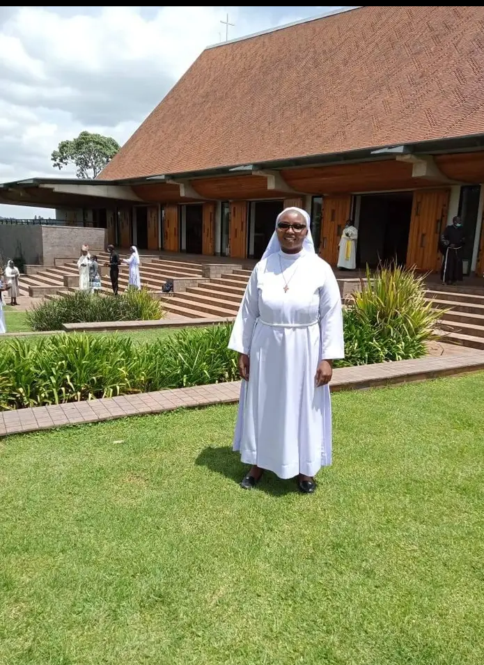

PRAYER WORRIORS'TIMETABLE
| DAY | TIME | PRAYER |
| Monday | 5:30am | Holy Rosary |
| Tuesday | 5:30am | seven sorrows |
| thursday | 5:30am | Diven mercy |
| Saturday | 10:00am | Rosary of Praise |
N/B All csa members usually meet on friday and sunday at 7:00 pm and 7:30 am for services (Holy Mass)

At our library we have the following books which we let our members borrow and return them after reading- Cathechism
- Do not let your hearts be troubled
- I am the winner
- T am save
- Catholic Answer Bible
- Rosary
- Statues
- All to Jesus
- Crist is All